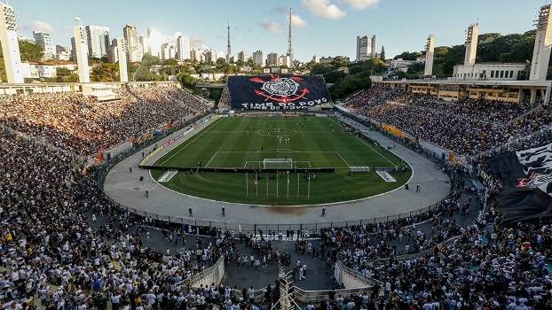
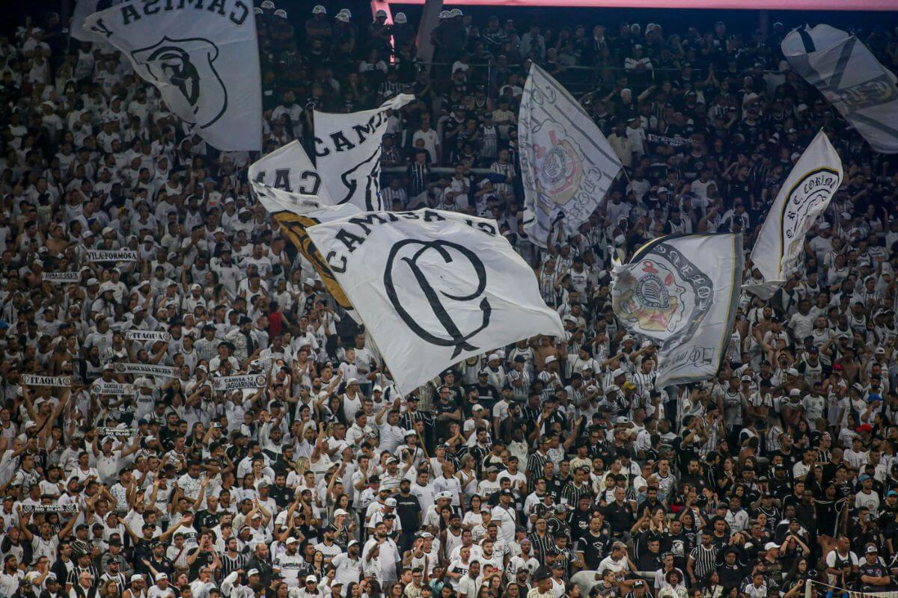
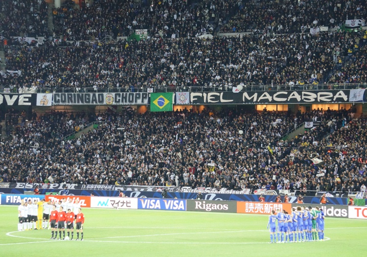

A Fiel Torcida
Mais do que futebol, o Corinthians é paixão, é religião. Sua torcida é conhecida como a mais fiel do mundo.

Assista à emoção da Fiel
Momentos da Fiel

O Pacaembu pulsava a cada jogo, palco de grandes histórias da Fiel.

Na Neo Química Arena, a torcida empurra o time com alma e coração.

A invasão em Tóquio emocionou o mundo — 30 mil torcedores com o Corinthians no peito.